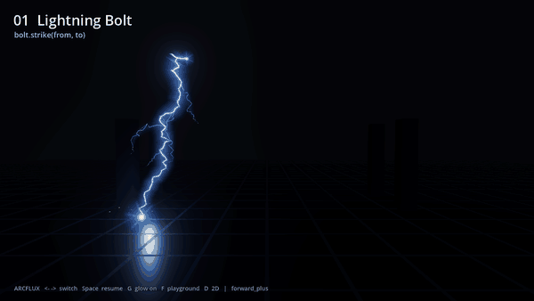

Strike lightning between any two points in Godot 4
Lightning in Godot 4 doesn't need a texture or an animated sprite. With ARCFLUX you create an ArcfluxBolt3D, add it to the scene and call strike(from, to). A branching bolt appears between the two points, flashes and fades, and each strike gets a new shape. Lasers and other continuous effects take set_active() instead, which turns a held button into one line. The pack has 33 presets, 27 in 3D and 6 in 2D: bolts, sky strikes, chain lightning, arcs that stay attached to moving points, auras that crawl over a mesh, tesla coils, beams and an EMP ring, in six colour palettes. It's all generated at runtime in code and needs Godot 4.4 or newer. The code is below, along with a demo that runs in the page.

The code
var bolt := ArcfluxBolt3D.new()
add_child(bolt)
bolt.strike($Hand.global_position, $Enemy.global_position)
$Laser.set_active(Input.is_action_pressed("fire")) # a continuous beam
Glow in a WorldEnvironment makes bolts look better, but each effect draws its own soft halo and reads fine without it.
Try it in your browser
It loads the pack's own demo, about 8 MB the first time, and it opens on its first scene, “Lightning Bolt”. Left and right arrow keys, or the on-screen buttons, move to other scenes. A desktop browser works best; the first start can take up to a minute while the shaders compile.
What is in the pack
Scaling a node scales everything in it: the geometry, the glow, the sparks and the light.
| Pack | Lightning & Beam VFX for Godot 4 (ARCFLUX) |
|---|---|
| Presets | 33 (27 3D, 6 2D) |
| Godot | 4.4 or newer, tested on 4.4.1 and 4.7.2 |
| Renderers | Forward+, Mobile, Compatibility (Web exports use Compatibility) |
| Textures | none: everything is made in code |
Get Lightning & Beam VFX for Godot 4 (ARCFLUX) on itch.io
There's also a bundle of my Godot 4 packs: the complete collection.